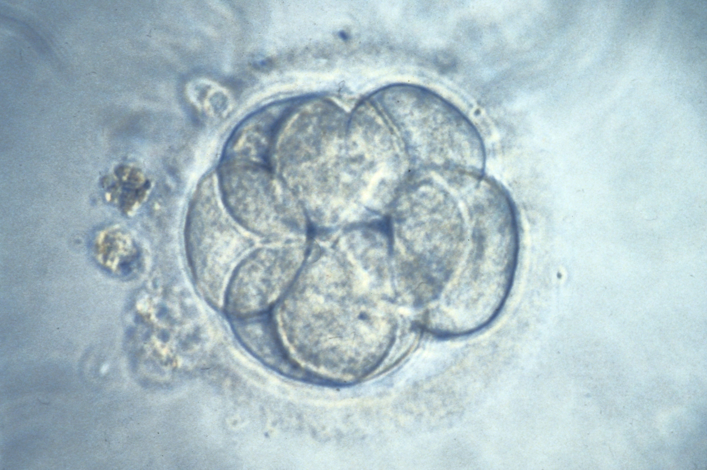

IVF event counts: which denominator?
A chosen linked cohort illustrates how per-start and conditional percentages answer different questions. Counts are cycles meeting an event, not eggs, embryos, babies or people. The independent embryo photo is not tracked through these bars.

Cycle starts
Three presentation seconds per event. No biological time, treatment duration or measured success probability is assigned. Playback stops at the final event.
100 / 100 starts = 100.0%
Initial denominator: no preceding event.
100 chosen cycle starts; complete follow-up assumed.
Chosen linked cycles reaching each event
Both denominators, all events
| Event | Cycles | Per start | Conditional on previous event |
|---|---|---|---|
| Cycle starts | 100 | 100/100 = 100.0% | No previous event |
| Actual retrieval | 90 | 90/100 = 90.0% | 90/100 = 90.0% |
| At least one fertilization | 72 | 72/100 = 72.0% | 72/90 = 80.0% |
| Embryo transfer | 54 | 54/100 = 54.0% | 54/72 = 75.0% |
| Clinical pregnancy | 36 | 36/100 = 36.0% | 36/54 = 66.7% |
| Live-birth delivery | 27 | 27/100 = 27.0% | 27/36 = 75.0% |
These are chosen counts, not empirical clinic rates. One linked transfer pathway and complete follow-up are assumed; frozen, cumulative and multiple-transfer cycles need different linkage. Not-progressed cycles do not count embryos lost or identify a medical cause. A live-birth delivery may involve more than one infant.
Original chapter quantitative teaching construction retained exactly. The observation has its own independent source and rights above. Units, assumptions and source record · Reproduction record.